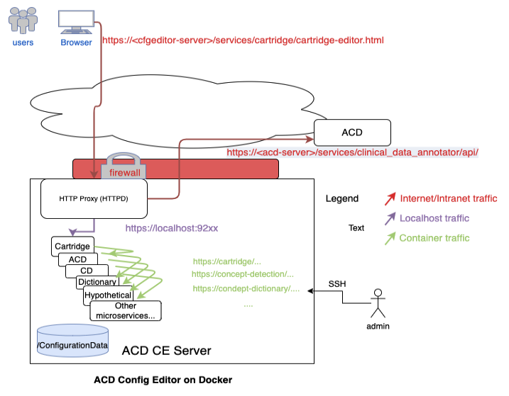
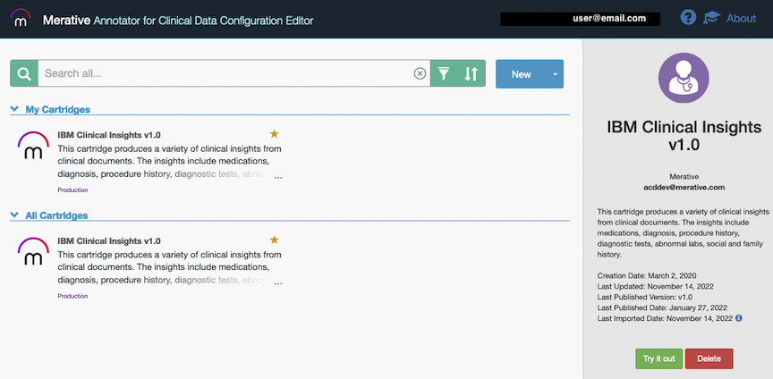

Notice: The Annotator for Clinical Data Configuration Editor is provided as-is (non-warranted) and at no cost to ACD customers. See license for terms of use.
In this document, find instructions for:Annotator for Clinical Data Configuration Editor is used to build knowledge cartridges which are used to configure and customize Annotator for Clinical Data. It is focused on providing domain adaptation to Annotator for Clinical Data service through the construction of knowledge cartridges.
Each customer's use case and data sets are unique, however, there are common cognitive patterns within health data text that can be captured into artifacts so they can be reused across projects. Configuration Editor allows the domain expert to build a cognitive model, contained in a cartridge, to extract structured data from unstructured text in order to derive valuable insights. The tool provides a mechanism for the domain expert to share cognitive models or pieces of a model with other customer engagements. The tool's purpose is to enable customization, reduce development time, and improve accuracy of building cognitive models that run on Annotator for Clinical Data service.
In a cartridge, there are domain-specific artifacts chosen or created by the domain expert detailing Annotator for Clinical Data configuration information. There are various types of artifacts that include: dictionaries, clinical attributes, derived clinical attributes, derived concepts, ontologies, qualifiers, filters, etc. The artifacts are contained in a cartridge, which represents the cognitive model. A cartridge has the ability to include one or more dependencies on other cartridges.
The tool allows the domain expert to view Annotator for Clinical Data analytic insights as they are building their cartridge in order for them to refine their model to meet their business needs. Once the cartridge captures desired cognitive insights, the domain expert will customize Annotator for Clinical Data by deploying a snapshot of the cartridge to Annotator for Clinical Data. The deployment of the cartridge snapshot will create 'flow' and 'profile' objects within the Annotator for Clinical Data service. These objects can then be referenced as part of the request when invoking Annotator for Clinical Data service to analyze your unstructured text.
The Configuration Editor can be deployed locally to a single Linux system using Docker or can be deployed on OpenShift.
Once installed, use the instructions on the Install page to access the Configuration Editor using a browser on the host it was deployed to.
Videos and other educational content.
For information about Annotator for Clinical Data, click the link to go to the documentation.
Configuration Editor is provided to you as-is and free of charge. For support or questions, please refer to Support.
Acceptance of terms of use is required to use the tool.
View Program TermsThe following will walk through the steps necessary to set up and configure a system with the Annotator for Clinical Data Configuration Editor (ACD Configuration Editor) using Docker. This sets up a local copy of the Configuration Editor in an "all-in-one" single system that can be used to create, edit and preview Annotator for Clinical Data (ACD) cartridges. The Configuration Editor can also deploy and test against a remote ACD instance that you have access to. The diagram below shows the flows in and out of the server you'll be setting up. Ensure any firewalls are open to allow this traffic.
The ACD Configuration Editor setup we use here should be installed on a dedicated system with these requirements:
NOTE: The disk where Docker stores its images and where ACD Configuration Editor is installed needs to have 200GB of storage free.
Refer to the Installation and configuration of prerequisite software instructions below.
The ACD Configuration Editor needs to access several services through a reverse proxy (single host endpoint). The instructions below are to set up an Apache HTTP server, however, any reverse proxy server could be configured for this. Note also this setup will end up with a self-signed certificate being used by Apache HTTP and presented to the browser/client. For installing a real certificate see http://httpd.apache.org/docs/2.4/ssl/ssl_faq.html#realcert or use Let's Encrypt to generate one such as https://www.digitalocean.com/community/tutorials/how-to-secure-apache-with-let-s-encrypt-on-centos-7
Run this command to install the Apache HTTP server and set it to auto-start with the system:
sudo yum install httpd mod_ssl
sudo /usr/sbin/setsebool -P httpd_can_network_connect on
sudo firewall-cmd --permanent --add-port=443/tcp
sudo firewall-cmd --reload
As root, update the file /etc/httpd/conf.d/ssl.conf by adding the following lines near the end of the file, right before the </VirtualHost> at the end of the file. This configures the HTTP proxy to route incoming calls.
# Add these lines to /etc/httpd/conf.d/ssl.conf right before the ending </VirtualHost> entry
# block access to swagger docs
<LocationMatch "/services/.*/api/swagger">
ProxyPass "!"
</LocationMatch>
<LocationMatch "/services/.*/documentation">
ProxyPass "!"
</LocationMatch>
# sets up httpd as a proxy to front end calls to the ACD Configuration Editor services and a target acd endpoint
# you may need to change localhost to the actual localhost name if you cannot do a curl https://localhost:9281/services/cartridge for example
SSLProxyEngine on
ProxyRequests Off
ProxyPass /services/cartridge https://localhost:9281/services/cartridge
ProxyPassReverse /services/cartridge https://localhost:9281/services/cartridge
#ProxyPass /services/clinical_data_annotator https://localhost:9272/services/clinical_data_annotator
#ProxyPassReverse /services/clinical_data_annotator https://localhost:9272/services/clinical_data_annotator
# reverse proxy to add in an ACD target deployment instance - change this to your acd instance(s) url endpoints.
# note you will also need to add configuration to the acd-ce.properties file for each acd target instance as documented below.
#ProxyPass /acd-dev/api https://acdroute.yourdevserver.com/services/clinical_data_annotator/api
#ProxyPassReverse /acd-dev/api https://acdroute.yourdevserver.com/services/clinical_data_annotator/api
#ProxyPass /acd/api https://acdroute.yourserver.com/services/clinical_data_annotator/api
#ProxyPassReverse /acd/api https://acdroute.yourserver.com/services/clinical_data_annotator/api
# =========
# USERS: add additional reverse proxy aliases to any other ACD targets here like entry above
# =======
ProxyTimeout 120
SSLProxyVerify none
SSLProxyCheckPeerCN off
SSLProxyCheckPeerName off
SSLProxyCheckPeerExpire off
Change history for the default ssl.conf file:
SSLProxyCheckPeerExpire off
sudo apachectl start
sudo systemctl enable httpd
/etc/httpd/logs (you need to be root to see them by default) in case you need to look at logs.
sudo yum install java-1.8.0-openjdk
docker -version
Run the command:
perl -version
If you get an error that the command is not installed, install it with:
sudo yum install perl
Download the ACD Configuration Editor deployment bundle and place it on the target machine:
Note: If updating an existing installation, be sure to back up and merge changes into your acd-ce.properties file (see Updating the Configuration Editor).
Untar the install files by running the command:
tar -xvf config-editor-<timestamp>.tar.gz
Change the current directory using the command:
cd Docker
Update the properties file with the name of the host your users will be accessing the Configuration Editor from (the host name they will enter into the browser) by using the following command against the
acd-ce.properties file:
sed -i 's/%SERVER%/<hostname>/g' acd-ce.properties
acd-ce.properties and restart the acd-ce processes.
In the acd-ce.properties file is also the configuration file where configuration data goes. It defaults to %HOME%/acd-ce/installs/config/. You need to change this to a real directory that is read/write for the Docker process user (set below) and should be a directory you will back up. For example (replace <user> with your user name):
sed -i 's/%HOME%/\/home\/<user>/g' acd-ce.properties
Finally, in the acd-ce.properties file, is the user and group that Docker will start the containers as. It is defined near the top on a line that starts with something similar to this:
clinical_data_annotator_common_docker_user=
Edit this line in the file. The <userid> should be a user id on your local system that has RWX permission to the acd-ce/installs/config target directory defined above. The group should be set to 0.
The user can be a uid (the id of the user, e.g. 1001, or your own user id which you can get by using the id command on Linux).
You can test what you use here by running:
docker run -u <userid>:0 hello-world
Back up your properties file. Every time you update it, the file will be overwritten and you'll want to merge back any changes you made here:
cp acd-ce.properties acd-ce.properties.bak
Sign on to the container registry with the credentials provided when the product was purchased:
docker login acdcontaineredition.azurecr.io -u <application-ID>
Now to start the acd-ce processes (i.e. the Docker containers), run the following command:
./run-acd-ce.sh
This command will stop any running containers, remove any old images, load the current images and start the Docker containers. The command is complete once all the containers are started and you are returned to the command prompt.
To restart the acd-ce processes with the latest configuration from acd-ce.properties, you can use:
./run-acd-ce.sh -restart
The ACD Configuration Editor should now be running. To test it, open your browser and go to:
https://<hostname>/services/cartridge/cartridge-main.html
You will get an error about the self-signed certificate in the browser, but you can use advanced option to continue to the site. In Google Chrome, if there is no button to proceed, click on the advanced warning text and type thisisunsafe (all one word lower-case--type it after clicking on the warning) and it should proceed. This is only needed the first time in. To fix this, add a trusted CA-issued certificate to the Apache HTTP server.
The first prompt is going to ask for your name and email to identify any configuration items you create and what you have access to. Note that there is no actual authentication configured unless you added it to the HTTP server above (with the OIDC module).
After you are in, you are at the main ACD Configuration Editor catalog page. Initially, there are no default cartridges. You can install the base Clinical Insights cartridge via an import and extend that cartridge or create your own new cartridge.
Note: If you had previously copied the ACD Clinical Insights cartridge, you will want to refer to the ACD Cartridges Github repository to make sure you are using the most current version of the cartridge in your new Configuration Editor installation.
In the upper right corner of the ACD Configuration Editor main page, you can click the mortar board tutorial link to see Introductory videos and click the "?" icon to view the Getting Started Guide.

Periodically, refer to this Configuration Editor documentation for updates to the Configuration Editor packages and see below for Updating the Configuration Editor instructions.
When analyzing text in the ACD Configuration Editor the first time after installation or a restart, it is common to experience an initial error while the data model is beinging loaded. Wait a few minutes after the initial error is received and retry the operation.
If you are going to connect to an external ACD instance, you need to add the standard certifying authorities to the Java trust store used by the services. Copy the default Java cacerts file certificates into the trust store used by the ACD Configuration Editor services and then restart the services with the following command.
The following command will copy all CAs from the Java cacerts file into the trust store used by the Configuration Editor processes. You may need to adjust the srckeystore path to match your exact Java version or location. Adjust the java-1.8.0-... directory to your level and the /tmp target should match where you pointed the install to run from in the acd-ce.properties file.
keytool -importkeystore -srckeystore /usr/lib/jvm/java-1.8.0-openjdk-1.8.0.262.b10-1.el7.x86_64/jre/lib/security/cacerts -destkeystore /tmp/installs/config/truststore/trust.jks -srcstorepass changeit -deststorepass wats0n
After running this successfully, run the following command to restart the containers to pick up the change:
./run-acd-ce.sh -restart
To configure external ACD Hosts for deploying published cartridges from the Configuration Editor, you must provide them in the acd-ce.properties file and provide proxy redirects in the ssl.conf Apache HTTP configuration file. To add ACD target hosts, you can add them to the acd-ce.properties file. An example of adding an ACD target to an ACD container edition instance is:
clinical_data_annotator_car_acd_host_1_label="Annotator_for_Clinical_Data_Container_Edition";\
clinical_data_annotator_car_acd_host_1_url=https://<your container edition url>;\
clinical_data_annotator_car_acd_host_1_proxy=wh-acd-ce;\
clinical_data_annotator_car_acd_host_1_auth=Bearer;\
clinical_data_annotator_car_acd_host_1_phi=false;\
ACD Hosts must be indexed in the properties file using clinical_data_annotator_car_acd_host_<index> as the beginning of their property name. The possible properties are:
_label which is the name for the host that will be shown in the Configuration Editor_url which is what will be shown in the host description in the Configuration Editor_proxy which is the proxy you have configured in your ssl.conf file (see Installation and configuration of prerequisite software) to allow requests to the hosts and avoid CORS errors_phi which is either true or false based on whether this ACD Host can support protected health information_auth which specifies the type of authentication the host requires. The three possible auth types are:
As you add new ACD Hosts, you must configure a proxy in your ssl.conf file in order to allow requests to the hosts and avoid CORS errors. The proxy specified in your ssl.conf file must match the proxy in your acd-ce.properties file for that host.
You can use the OIDC module in Apache HTTP server to provide an authentication layer. You will need an OpenID Connect Provider to do the actual authentication and need to add this Configuration Editor HTTP server as a client to it. Below are the basic steps to do this. See the detailed usage and support instructions of this plugin at https://github.com/zmartzone/mod_auth_openidc.
sudo yum install mod_auth_openidc
sudo dnf module enable mod_auth_openidc
or (indicate the version accordingly, e.g., 2.3, 2.4, etc.):
sudo dnf module enable mod_auth_openidc:2.3
/etc/httpd/conf.d/auth_openidc.conf as root. For example:
sudo vi /etc/httpd/conf.d/auth_openidc.conf
In that file, add these lines to the top:
OIDCRedirectURI https://<your_hostname>/services/redirect_uri
OIDCCryptoPassphrase passPhrase! (change this to something random)
OIDCProviderMetadataURL <your openid connect provider metadata url>/.well-known/openid-configuration (get from your OIDC provider)
OIDCClientID ****** (get from your OIDC provider when you register this client app)
OIDCClientSecret ********** (get from your OIDC provider when you register this client app)
# echo back the claim headers to the client so it knows the user id and email
Header echo ^OIDC_CLAIM_
# configure which uris to protect with openid-connect plugin
<Location /services>
AuthType openid-connect
Require valid-user
</Location>
In the acd-ce.properties file the OIDC_* headers are configured that are used to populate the fields of the user email and name and for checking authorizations.
acd-ce.properties file. These properties are:
clinical_data_annotator_car_auth_enable_logout - Set this property as true to enable logout.clinical_data_annotator_car_auth_logout_url - Set this property to the URL your authentication method uses to perform logout, if applicable. encodeURIComponent or with https://www.urlencoder.org/.your-acd-config-editor-site/services/cartridge/cartridge-main.html.clinical_data_annotator_car_auth_logout_cookies - Set this property to the cookies your authentication method uses to store session information. If there are multiple cookies, comma-separate them. These will be cleared in the logout process.All configuration data such as cartridges, flows, dictionaries, filters, etc., are stored by default in the %HOME%/acd-ce/installs/config/artifactstore/ directory on the local machine. This is set in the acd-ce.properties file and you can change this as needed. Back up this directory often and if you have to recover your ACD Configuration Editor machine you can restore this from the point of your last backup.
Run the following command to stop the containers running the Configuration Editor:
./run-acd-ce.sh -stop
To update to a newer version of the ACD Configuration Editor, follow these steps:
acd-ce.properties fileacd-ce.properties file to merge in any changes you made from your backup (replacing the %SERVER% with the host name and updating the shared configuration directory, for example)acd-ce.properties file with the *_shared_config_dir property and run these commands to clear the shared certificates and truststore:
rm -r certs
rm -r keystore
rm -r truststore
docker login acdcontaineredition.azurecr.io -u <application-ID>
acd-ce directory where the tar file was unpacked to, run the following command to update all the images and restart the containers with the latest build and your modified properties file:
./run-acd-ce.sh
The following will walk through the steps necessary to set up and configure the Annotator for Clinical Data Configuration Editor running in an existing Red Hat OpenShift cluster. Setup includes setting up the Configuration Editor and its required ACD sandbox instance. This environment can be used to create, edit and preview Annotator for Clinical Data (ACD) cartridges. The Configuration Editor can also be configured to deploy and test against other ACD instances, either running on the same cluster or elsewhere. The diagram below shows the flows in and out of the server you'll be setting up. Ensure any firewalls are open to allow this traffic.

The ACD Configuration Editor hardware prerequisites are in addition to those required by an installation of ACD Container Edition as a dedicated sandbox instance. Refer to ACD Container Edition Prerequisites.
| Component | Number of worker nodes | CPU/node | Memory/node (G) |
|---|---|---|---|
| ACD Configuration Editor | 3 (In addition to those for ACD Container Edition) | 8 | 32 |
2 replicas are recommended for the two ACD Configuration Editor deployments: Cartridge service and Dictionary service.
The ACD Configuration Editor requires an installation of ACD Container Edition as a dedicated sandbox instance. Refer to Installing ACD for requirements and installation instructions. When installing ACD, select the type of "ConfigurationEditor" for license use type. The ACD Configuration Editor needs to be deployed into the same namespace as the dedicated sandbox instance.
Note that the ACD sandbox instance is a required prerequisite for the Configuration Editor so its Virtual Processor Core (VPC) usage is not applied towards the purchased ACD licenses. See License Tracking for details.
Storage considerations: For performance reasons, it is recommended that the setup of ACD and ACD Configuration Editor use a file-based storage option.
tar -xvf config-editor-<timestamp>.tar.gz
cd Kubernetes
imagePullSecrets entry in the deployment.yaml files for each service if not using the suggested global pull secret from the operator install.
cd merative-acd-ce/cdc/chart/cdc/templates
cd merative-acd-ce/crtg/chart/crtg/templates
oc login ...
merative-acd-operator-system.
acd_namespace variable to make it available for subsequent commands from the command line shell:
export acd_namespace=<acd namespace>
where <acd namespace> is the namespace where the ACD sandbox is running.
oc project ${acd_namespace}
helm install merative-acd-ce-cdc \
merative-acd-ce/cdc/chart/cdc \
--set replicas=1 \
--set configurationStorage.file.volume.existingClaimName=<pvc name> \
--namespace ${acd_namespace}
<pvc name> is the persistent volume claim (PVC) the ACD sandbox instance is usingFind the merative-acd-cdc pod by running the command:
kubectl get pods -n ${acd_namespace}
Run a health check against the pod using the following command. It should list "serviceState":"OK".
kubectl exec <pod name> -c merative-acd-cdc -n ${acd_namespace} -- curl -sk 'https://localhost:9443/services/concept_dictionary/api/v1/status/health_check'
helm install merative-acd-ce-crtg \
merative-acd-ce/crtg/chart/crtg \
--set replicas=1 \
--set configurationStorage.file.volume.existingClaimName=<pvc name> \
--namespace ${acd_namespace}
<pvc name> is the persistent volume claim (PVC) the ACD sandbox instance is using
Find the merative-acd-crtg pod by running the command:
kubectl get pods -n ${acd_namespace}
Run a health check against the pod using the following command. It should list "serviceState":"OK".
kubectl exec <pod name> -c ibm-wh-acd-crtg -n ${acd_namespace} -- curl -sk 'https://localhost:9443/services/cartridge/api/v1/status/health_check'
Accessing ACD Configuration Editor can be set up with no authentication or using an Identity Provider for authentication.
If ACD Configuration Editor is running in a restricted environment and no authentication is needed, a simple OpenShift route can be configured as follows:
merative-acd-ce-macroservice.yaml
apiVersion: route.openshift.io/v1
kind: Route
metadata:
name: merative-acd-crtg
spec:
host:
port:
targetPort: crtg-https-pxy
tls:
termination: passthrough
to:
kind: Service
name: merative-acd-crtg
oc create -f merative-acd-ce-macroservice.yaml -n ${acd_namespace}
There are multiple Identity Providers for providing an authentication layer for ACD Configuration Editor (Azure Active Directory, Google, IBMId, etc). This section will discuss the configuration using OIDC with standard OAuth2 Proxy.
merative-acd-ce-oauth.
oc create namespace merative-acd-ce-oauth
oc project merative-acd-ce-oauth
merative-acd-ce-oauth.yaml:
kind: List
apiVersion: v1
items:
# Create a secure connection to the proxy via a route
- apiVersion: route.openshift.io/v1
kind: Route
metadata:
name: proxy
spec:
to:
kind: Service
name: proxy
tls:
termination: Reencrypt
- apiVersion: v1
kind: Service
metadata:
name: proxy
annotations:
service.alpha.openshift.io/serving-cert-secret-name: proxy-tls
spec:
ports:
- name: public-https
port: 443
targetPort: 8443
selector:
app: proxy
# Launch a proxy as a deployment
- apiVersion: apps/v1
kind: Deployment
metadata:
name: proxy
spec:
replicas: 1
selector:
matchLabels:
app: proxy
spec:
containers:
- name: oauth-proxy
image: quay.io/oauth2-proxy/oauth2-proxy
imagePullPolicy: IfNotPresent
ports:
- containerPort: 8443
name: public-https
args:
- --client-id=<client id>
- --client-secret=<client secret>
- --cookie-secret=<cookie secret>
- --cookie-secure=true
- --email-domain=*
- --https-address=:8443
- --oidc-issuer-url=<oidc issuer url>
- --pass-host-header=true
- --pass-user-headers=true
- --provider=oidc
- --provider-display-name="ACD OIDC Provider"
- --redirect-url=https://<hostname>/oauth2/callback
- --request-logging=true
- --set-authorization-header=true
- --set-xauthrequest=true
- --show-debug-on-error=true
- --skip-auth-strip-headers=true
- --skip-provider-button=true
- --ssl-upstream-insecure-skip-verify=true
- --upstream=https://merative-acd-crtg.merative-acd-operator-system.svc:443/
- --tls-cert-file=/etc/tls/private/tls.crt
- --tls-key-file=/etc/tls/private/tls.key
volumeMounts:
- mountPath: /etc/tls/private
name: proxy-tls
volumes:
- name: proxy-tls
secret:
secretName: proxy-tls
<client id> is the OAuth client id
<cookie secret> is the generated cookie secret
<client secret> is the OIDC issuer URL, e.g. https://sts.windows.net/xxxxxxxx-xxxx-xxxx-xxxx-xxxxxxxxxxxx/ for Azure Active Directory
<hostname> is the OAuth proxy hostname
oc create -f merative-acd-ce-macroservice.yaml
More options and details for the proxy are available in the OAuth2 Proxy Docs. Information on troubleshooting the OAuth Proxy is found at Troubleshooting the OAuth Proxy.
After configuring a route, you may need to update the cartridge service deployment.yaml clinical_data_annotator_car_url environment variable to set the proper hostname for the service.
Go to the following URL to verify authentication and the proxy route: https://<hostname>/services/cartridge/cartridge-main.html
You may get an error about the self-signed certificate in the browser, but you can use advanced option to continue to the site. In Google Chrome, if there is no button to proceed, click on the advanced warning text and type thisisunsafe (all one word lower-case--type it after clicking on the warning) and it should proceed. This is only needed the first time in. To fix this, add a trusted CA-issued certificate to the Apache HTTP server.
After you are in, you are at the main ACD Configuration Editor catalog page. Initially, there are no default cartridges so your list will be empty. You can install the base Clinical Insights cartridge via an import and extend that cartridge or create your own new cartridge. In the upper right corner of the page, click the mortar board tutorial link to see Introductory videos and click the "?" icon to view the Getting Started Guide.
Periodically, refer to this documentation for updates to the Configuration Editor packages and see below for update instructions.
The ACD Configuration Editor can be configured to put a 'Logout' button on the user interface. This button can clear cookies and redirect to an authentication URL to perform logout. In order to configure the ability to logout of your instance, you can configure certain parameters under the Cartridge service in the merative-acd-ce/crtg/chart/crtg/values.yaml file.
Custom properties include:
clinical_data_annotator_car_auth_enable_logout - Set this property as true to enable logoutclinical_data_annotator_car_auth_logout_url - Set this property to the URL your authentication method uses to perform logout, if applicable.
encodeURIComponent or with https://www.urlencoder.org/.
your-acd-config-editor-site/services/cartridge/cartridge-main.html.clinical_data_annotator_car_auth_logout_cookies - Set this property to the cookies your authentication method uses to store session information. If there are multiple cookies, comma-separate them. These will be cleared in the logout process.ACD Configuration Editor provides the ability to deploy published cartridges to ACD instances in production environments. To configure additional custom environments, the following files must be modified and the Cartridge microservice must be redeployed using Helm (see Installing ACD Configuration Editor instructions).
merative-acd-ce/crtg/chart/crtg/nginx-server.conf
location /<identifier>/ {
resolver <dns_host>;
proxy_set_header Authorization $http_authorization;
set $acd_host "<hostname>";
proxy_set_header Host $acd_host;
proxy_ssl_server_name on;
if ($request_uri ~* "/<identifier>(/.*$)") {
set $path_remainder $1;
}
proxy_pass https://$acd_host/services/clinical_data_annotator$path_remainder;
<identifier> is the identifier of the custom ACD instance, e.g. custom-acd
<dns_host> is the dns resolver for the environment. If the environment has unlimited external access a resolver like Google (8.8.8.8) can be used. The local resolver can be determined by inspecting the /etc/resolv.conf file on the proxy pod.<hostname> is the hostname of the custom ACD instance
merative-acd-ce/crtg/chart/crtg/values.yaml
- name: "clinical_data_annotator_car_acd_host_<n>_label"
value: "Annotator for Clinical Data - <identifier>"
- name: "clinical_data_annotator_car_acd_host_<n>_url"
value: "https://<hostname>/services/clinical_data_annotator/api"
- name: "clinical_data_annotator_car_acd_host_<n>_proxy"
value: "<identifier>"
- name: "clinical_data_annotator_car_acd_host_<n>_auth"
value: "Bearer"
- name: "clinical_data_annotator_car_acd_host_<n>_phi"
value: "false"
<identifier> is the identifier of the custom ACD instance, e.g. custom-acd<hostname> is the hostname of the custom ACD instance<n> is the ordinal value of the custom ACD instance starting with 1ACD Hosts must be indexed in the properties file using clinical_data_annotator_car_acd_host_<index> as the beginning of their property name. The index must start at 1. The properties are:
_label which is the name for the host that will be shown in the Configuration Editor_url which is what will be shown in the host description in the Configuration Editor_proxy which is the proxy you have configured in your merative-acd-ce/crtg/chart/crtg/nginx-server.conf file mentioned in Step 1 in this section_phi which is either true or false based on whether this ACD Host can support protected health information_auth which specifies the type of authentication the host requires. The three possible authentication types are:
All configuration data such as cartridges, flows, dictionaries, filters, etc., are stored in the storage set up as part of the ACD prerequisites. The recommendation is to use file-based storage via a persistent volume claim (PVC). Backup of this storage is implementation-specific. It is recommended to have at least daily backups in case a restore is needed.
To update to a newer version of the ACD Configuration Editor follow these steps:
merative-acd-ce/crtg/chart/crtg/nginx-server.confmerative-acd-ce/crtg/chart/crtg/values.yaml
helm delete merative-acd-ce-crtg
helm delete merative-acd-ce-cdc
Customers that were part of the Early Access Program (EAP) can use the following steps to migrate their existing IBM Watson ACD Configuration Editor cartridges and artifacts to their newly installed Merative ACD Configuration Editor instance.
acd-ce directory, stop the Merative Configuration Editor:
./run-acd-ce.sh -stop
%HOME%/installs/config/artifactstore directory in the IBM Watson ACD EAP environment. The %HOME% value is where the IBM Watson ACD Configuration Editor was installed.
tar -czv --exclude=SHAREDBASE <archive-name>.tar.gz *
%HOME%/installs/config/artifactstore directory in the Merative environment. The %HOME% value is where the Merative ACD Configuration Editor was installed.
%HOME%/installs/config/artifactstore directory using the fully qualified path to the archive file:
tar xvf <archive-path>/<archive-name>.tar.gz .
acd-ce directory, start the Merative ACD Configuration Editor:
./run-acd-ce.sh
NOTE: When analyzing text the first time after restarting Merative ACD Configuration Editor, it is common to experience an initial error while the data model is being loaded. Wait a few minutes after the initial error is received and retry the operation.
The following is a list of videos and links to educational content about Annotator for Clinical Data Configuration Editor.
Note: Our name changed since these videos were recorded. The features are still the same.